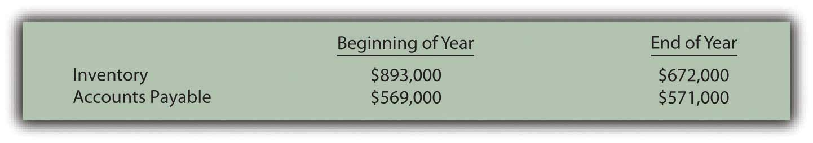
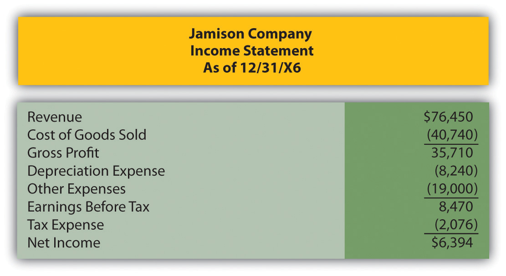
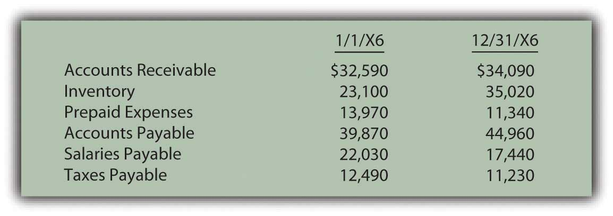
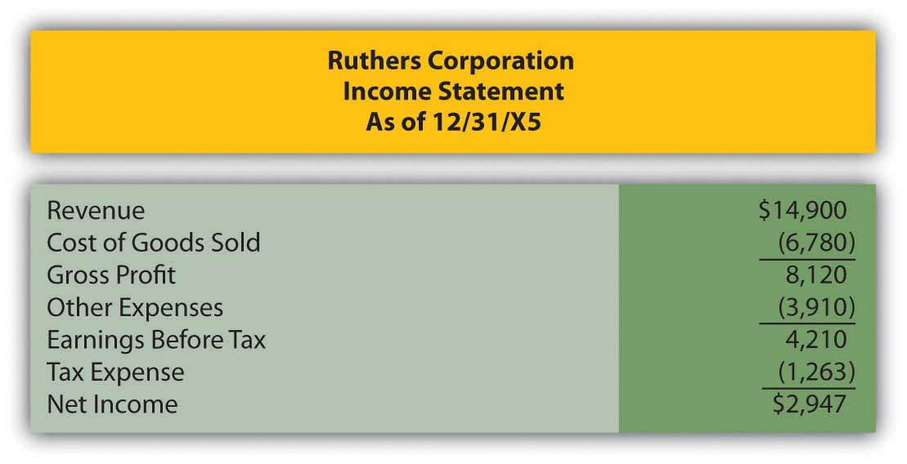
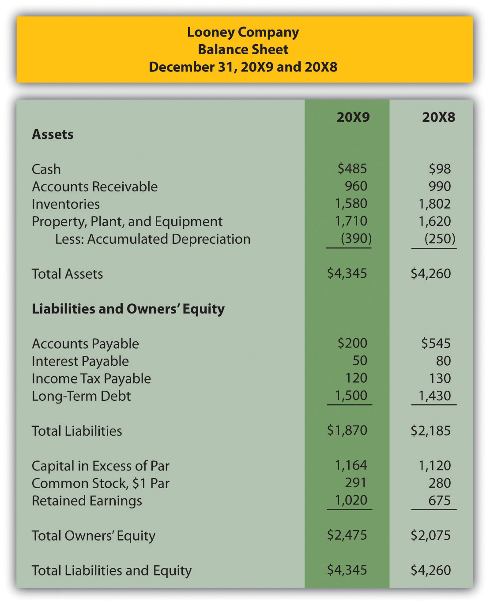
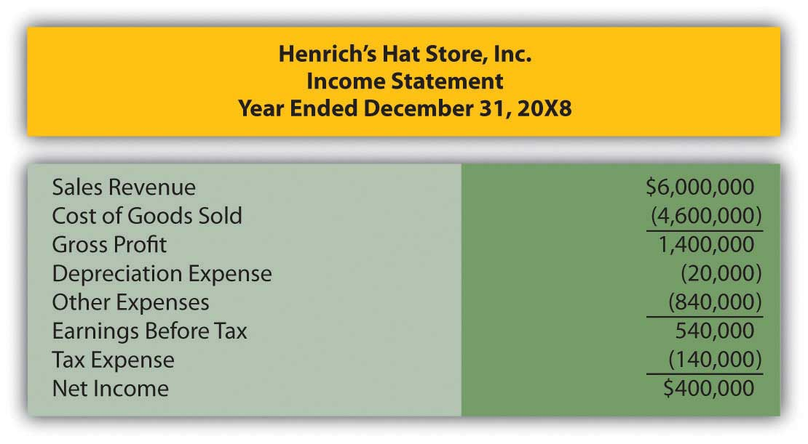
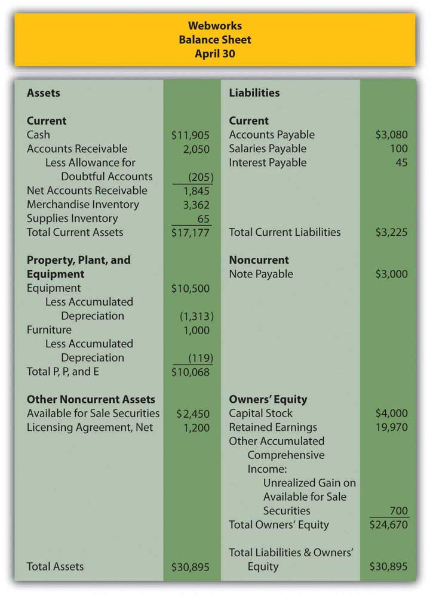

Where would cash collected from customers appear on the statement of cash flows?
Fritz Corporation began the year with $900,000 in accounts receivable. During the year, revenue totaled $7,000,000. Fritz ended the year with $750,000 in accounts receivable. How much cash did Fritz collect from customers during the year?
Where would the redemption of bonds payable appear on the statement of cash flows?
During the year, Rafael Corporation paid dividends of $23,000, received cash by signing a note payable of $105,000, purchased a piece of equipment for $29,400 and received dividend income of $12,000. What would be Rafael’s cash flow from financing activities for the year?
Happy Toy Company began 20X9 with $1,000 in inventory and $4,500 in accounts payable. During the year, Happy Toy incurred cost of goods sold of $25,000. Happy Toy ended 20X9 with $2,700 in inventory and $3,800 in accounts payable. How much cash did Happy Toy pay for purchases during 20X9?
Where would the purchase of available for sale securities appear on the statement of cash flows?
Crystal Bell Company generated $48,900 in net income during the year. Included in this number are a deprecation expense of $13,000 and a gain on the sale of equipment of $4,000. In addition, accounts receivable increased by $16,000, inventory decreased by $5,090, accounts payable decreased $4,330 and interest payable increased $1,200. Based on the above information, what would Crystal Bell’s cash flow from operations using the indirect method?
Transportation Inc. incurred rent expense of $98,000 during the year. Prepaid rent increased by $34,000 during the year. How much cash did Transportation pay for rent during the year?
Use the following abbreviations to indicate in which section of the statement of cash flows you would find each item below.
O = Operating Section
I = Investing Section
F = Financing Section
Whitmore Corporation had cost of goods sold of $4,793,000 during the year. Whitmore had the following account balances at the beginning and end of the year.
Figure 17.37 Change in Inventory and Account Payable Balances
What amount of cash did Whitmore pay for inventory purchases this year?
Jamison Company’s income statement for 20X6 is below.
Figure 17.38 Jamison Company Income Statement as of 12/31/X6
Figure 17.39 Selected Balance Sheet Accounts from the Beginning and End of 20X6
Determine Jamison’s cash flow from operations using both the direct and indirect methods.
Killian Corporation had several transactions during the year that impacted long-term assets and liabilities and owners’ equity. Determine if each of the following items would be shown in investing activities, financing activities or neither.
Figure 17.40 Determination of Cash Flow Balances

Ruthers Corporation began business on January 1, 20X5. The financial statements for Ruthers’ first year are given below. Because it is the first year of the company, there are no beginning balances for the balance sheet accounts. This should simplify your preparation of the cash flow statement.
Figure 17.41 Ruthers Corporation Income Statement as of 12/31/X5
Figure 17.42 Ruthers Corporation Balance Sheet 12/31/X5

Additional Information:
Prepare Ruthers’ statement of cash flows for 20X5 using the indirect method of calculating cash flows from operations.
Looney Company is in the process of preparing financial statements for the year ended 12/31/X9. The income statement as of 12/31/X9 and comparative balance sheets are presented below. Note that the Balance Sheet is presented with the most current year first, as is done in practice.
Figure 17.43 Looney Company Income Statement as of 12/31/X9

Figure 17.44 Looney Company Balance Sheet December 31, 20X9 and 20X8
The following additional information has been assembled by Looney’s accounting department:
Prepare Looney’s statement of cash flows as of 12/31/X9 using the direct method.
The following information relates to Henrich’s Hat Store Inc. for the year ended December 31, 20X8.
Figure 17.45 Henrich’s Hat Store Inc. Balance Sheet

Figure 17.46 Henrich’s Hat Store Inc. Income Statement for the Year Ended December 31, 20X8
Other information:
Prepare the statement of cash flows for Henrich’s Hat Store Inc. for the year ended December 31, 20X8 using the indirect method of calculating cash flows from operations.
This problem has carried through several chapters, building in difficulty. Hopefully, it has allowed students to continuously practice skills and knowledge learned in previous chapters.
In Chapter 16 "In a Set of Financial Statements, What Information Is Conveyed about Shareholders’ Equity?", you prepared Webworks statements for April. They are included here as a starting point for May. This will be your final month of preparing financial statements for Webworks. This month, the statement of cash flows will be added. To simply the problem, fewer transactions than usual are included.
Here are Webworks financial statements as of April 30.
Figure 17.47 Webworks Financial Statements

Figure 17.48

Figure 17.49
The following events occur during May:
a. Webworks starts and completes twelve more Web sites and bills clients for $9,000.
b. Webworks purchases supplies worth $140 on account.
c. At the beginning of May, Webworks had twenty-two keyboards costing $121 each and twenty-eight flash drives costing $25 each. Webworks uses periodic FIFO to cost its inventory.
d. On account, Webworks purchases eighty-three keyboards for $122 each and ninety flash drives for $26 each.
e. Webworks sells 98 keyboards for $14,700 and 100 of the flash drives for $3,000 cash.
f. Webworks collects $9,000 in accounts receivable.
g. Webworks pays its $500 rent.
h. Webworks pays off $14,000 of its accounts payable.
i. Webworks sells all of its shares of QRS stock for $14 per share.
j. Webworks pays Juan $750 for his work during the first three weeks of May.
k. Webworks pays off its salaries payable from April.
l. Webworks pays Leon and Nancy a salary of $4,000 each.
m. Webworks’ note payable permits early payment with no penalty. Leon and Nancy decide to use some of their excess cash and pay off the note and interest payable. The note was paid at the beginning of May, so no interest accrued during May.
n. Webworks pays taxes of $740 in cash.
Required:
A. Prepare journal entries for the above events.
B. Post the journal entries to T-accounts.
C. Prepare an unadjusted trial balance for Webworks for May.
D. Prepare adjusting entries for the following and post them to your T-accounts.
o. Webworks owes Juan $200 for his work during the last week of May.
p. Webworks receives an electric bill for $450. Webworks will pay the bill in June.
q. Webworks determines that it has $70 worth of supplies remaining at the end of May.
r. Webworks is continuing to accrue bad debts at 10 percent of accounts receivable.
s. Webworks continues to depreciate its equipment over five years and its furniture over five years, using the straight-line method.
t. The license agreement should be amortized over its one-year life.
u. Record cost of goods sold.
E. Prepare an adjusted trial balance.
F. Prepare financial statements, including the statement of cash flows, for May. Prepare the operating section using the indirect method.